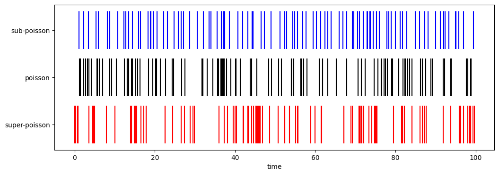

1.2. Full counting statistics#
1.2.1. Three types of counting statistics#
In the classical theory, the light is described as continuous fields. The quantum light consists of photons and thus it is discrete. Hence, modern quantum optics experiments measure individual photons rather than the continuous electric fields.
When a photon arrives at a detector, its arrival time is recorded. More photons are detected during a fixed time periods, stronger is the light.
After many photons arrived, the history of photon arrival is recorded as a time sequence. We are interested in the time intervals between two successive photon arrivals (known as waiting time). The statistical distribution of the intervals tells us the certain characters of the light beam.
In this section, we assume that photons are all in a single mode.[1]
Poisson distribution: Photons arrive independently at a constant average rate. The variance in its intensity equals the mean squared.
Super-poissonian distribution: Photons tend to arrive together in bunch during a short period of time (bunching) but it takes a longer time before a next bunch arrive. Statistically a variance of the intensity is larger than the mean squared.
Sub-poissonian distribution: Photons arrive more regularly than random (antibunching), resulting in a variance smaller than the mean squared.
As an example, we consider three different distributions and plot corresponding time series using the Gamma renewal process. Consider a Gamma distribution
where \(\Gamma(\cdot)\) is the Gamma function. The mean and variance are
and
The ratio of variance to the mean squared is \(1/k\) and thus the the fluctuation is larger for smaller \(k\). When \(k=1\), the fluctuation and the mean coincides and thus we have poisson distribution. The distributionis super-Poissonian for \(k<1\) and sub-Poissonian for \(k>1\).
In the following figure, three distributions with \(k=1\), \(k=0.5\), and \(k=2.0\) are plotted. \(\lambda\) is chosen such that all distribution have the same mean value (dashed line) so that the width of the distribution (fluctuation) can be compared.
import numpy as np
import matplotlib.pyplot as plt
# all three distributions have the same mean value
mean=1
# poisson distribution k=1
def dist_poisson(tau):
lam = 1/mean
return lam * np.exp(-lam*tau)
# subpoisson distribution k=2
def dist_subpoisson(tau):
k=2
lam = k/mean
return lam**k * tau**(k-1) * np.exp(-lam*tau)
# superpoisson distribution k=1/2
def dist_superpoisson(tau):
lam = 0.5/mean
tau[0]=1 # avoid divide by zero error
dist = lam**0.5 / tau**0.5 * np.exp(-lam*tau)/np.sqrt(np.pi)
dist[0]=np.inf # infinity at tau=0
tau[0]=0 # reset tau[0]
return dist
tau = np.linspace(0,10,101)
poisson = dist_poisson(tau)
subpoisson = dist_subpoisson(tau)
superpoisson = dist_superpoisson(tau)
fig, ax = plt.subplots(figsize=(5, 4))
ax.plot(tau,poisson,'k',label="poissonian")
ax.plot(tau,superpoisson,'r',label="super-poissonian")
ax.plot(tau,subpoisson,'b',label="sub-poissonian")
ax.legend(loc=1)
ax.axvline(x = 1, color = '0.8', linestyle = '--')
ax.set_xlabel(r"$\tau$")
ax.set_ylabel(r"$p(\tau)$")
plt.show(fig)

In the above plot, notice that \(p(0)=0\) for the subpoissonian distribution. That means the chance that two photons arrive at the same time is null. On the other hand, the superpoissonian distribution has \(\lim_{\tau\rightarrow 0}p(\tau) = \infty\), suggesting that the chance of two or more photons arriving at the same time is high. In between, the poisson distribution has \(p(0)=1\).
The spike plots in the following figure shows simulated arrival times of photons at the detector using the above three distributions.
1.2.2. Bunching and Anti-bunching#
We try to visualize what we found in the previous section. The arrival time of photons are simulated with the Gamma renewal processes. In the following plots, the arrival of a photon is plotted as a spike. The same parameter values is used as in the above plot. About 100 photons are detected for each probability distribution but since the process is stochastic it varies from one run to another.
import numpy as np
import matplotlib.pyplot as plt
# reset random number
rng = np.random.default_rng()
# generate spike train
def spike_train(tmax, mean, k):
lam = k/mean
times = np.array([])
t = 0.0
while True:
tau = rng.gamma(shape=k, scale=1/lam)
t += tau
if t >= tmax:
break
times = np.append(times,t)
return times
tmax = 100
spikes_poisson = spike_train(tmax,1,1)
spikes_subpoisson = spike_train(tmax,1,3)
spikes_superpoisson = spike_train(tmax,1,0.5)
print("The number of photons detected during time period of ",tmax)
print(" sub-poisson =",spikes_subpoisson.size)
print(" poisson =",spikes_poisson.size)
print("super-poisson =",spikes_superpoisson.size)
The number of photons detected during time period of 100
sub-poisson = 93
poisson = 104
super-poisson = 116
Next we plot the spikes of photons for three types of probability distributions.
# plot the results
fig, ax = plt.subplots(figsize=(12, 4))
ax.vlines(spikes_subpoisson, 2.6, 3.4, color='b', label="k=2")
ax.vlines(spikes_poisson, 1.6, 2.4, color='k', label="k=1")
ax.vlines(spikes_superpoisson, 0.6, 1.4, color='r', label="k=1/2")
ax.set_yticks([1, 2, 3])
ax.set_yticklabels(["super-poisson", "poisson", "sub-poisson"])
ax.set_xlabel("time")
plt.show(fig)

Roughly speaking the spikes are spread evenly for the sub-poissonian distribution, indicating that photons arrive constantly with little fluctuation. For super-poissonian distribution, on the other hand, wide gaps between spikes can be seen and photons tend to arrive together in clusters . Since photons in coherent laser is known to obey the poisson distribution, we consider it as a reference. The tendency that photons in the super-poissonian distribution arrive together in clusters with respect to photons in the poisson distribution is known as photon bunching. In the opposite direction, the tendency that photons in the sub-poissonian distribution arrive constantly is called photon anti-bunching.